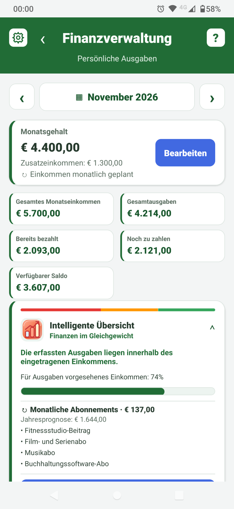

Finanzen verwalten
Erfassen Sie Ausgaben, Gehalt, zusätzliche Einnahmen, Rechnungen, Abonnements und wiederkehrende Einträge.
Finanzielle Ruhe · Finanzverwaltung und persönliche Organisation
Finanzielle Ruhe, früher bekannt als MyMoney, MeuDinheiro und MiDinero, verbindet persönliche Finanzen, Aufgaben, Notizen und Erinnerungen in einer Android-App.
Finanzielle Ruhe ist eine Android-App für Ausgabenkontrolle, Einnahmenverwaltung, Aufgaben, Notizen und Erinnerungen.
Persönliche Finanzen und Organisation auf Smartphone und Computer. Die Windows-Version wird zur Veröffentlichung vorbereitet und ist noch nicht öffentlich installierbar.
Geplant sind kostenlose Grundfunktionen ohne Werbung und eine einmalige Pro-Freischaltung im Microsoft Store. Käufe für Android und Windows bleiben unabhängig.
Desktopgerechte Oberfläche, Vollbildmodus, Ausgaben und Einnahmen, Aufgaben, Notizen, Tagebuch, Diagramme, Sparziele, PDF-Berichte und geschützte lokale Sicherungen. Sieben Sprachen und Darstellungsoptionen. Einige Funktionen hängen von Version, Lizenz und Windows-Berechtigungen ab.
Datenschutzerklärung (Android und Windows)
Die folgenden Android-Anleitungen, Bildschirmfotos und Informationen gelten weiterhin für die Mobilversion.
Finanzverwaltung und persönliche Organisation
Erfassen Sie Ausgaben, Gehalt, zusätzliche Einnahmen, Rechnungen, Abonnements und wiederkehrende Einträge.
Erstellen Sie Aufgaben, Erinnerungen und persönliche Notizen in Text oder Sprache.
Nutzen Sie Diagramme, Finanzkalender und wichtige Monatsindikatoren.
Schützen Sie Daten mit einer 8- bis 16-stelligen PIN und lokaler Verschlüsselung.
Diese realen Screenshots zeigen die deutsche Oberfläche klar, sachlich und ohne unnötige Überladung.


Sehen Sie das offizielle Video auf Deutsch oder öffnen Sie die komplette Playlist mit allen Sprachen.
Die wichtigsten Funktionen für Finanzen, Aufgaben und Notizen arbeiten lokal. Einige externe Dienste benötigen Internet.
Ja. Die App wurde umbenannt und nutzt weiterhin dasselbe Android-Paket: com.anspro.mymoney.app.
Im Footer finden Sie den Link zur ausführlichen englischen Datenschutzrichtlinie.
Finanzielle Ruhe ist eine Android-App für persönliche Finanzen und Alltagsorganisation. Paket: com.anspro.mymoney.app · Kontakt: moneyproapp@gmail.com
Finanzielle Ruhe ist auf Portugiesisch, Englisch, Spanisch, Französisch, Deutsch, Italienisch und Indonesisch verfügbar.
Ausgaben, Gehalt, zusätzliche Einnahmen, Raten, Abonnements und wiederkehrende Rechnungen.
Prognosen, Diagramme, Finanzkalender, PDF-Berichte und Sparplanung.
Aufgaben, Erledigungsquote, Text- und Sprachnotizen sowie lokales OCR gewählter Bilder.
Einmaliger Kauf für zusätzliche Planungsfunktionen, Tagebuch und automatische lokale Backups.
PIN mit 8 bis 16 Ziffern, unterstützte Biometrie, verschlüsselte Datensätze und portable v4-Backups.
Lokale Erinnerungen sowie optionale Firebase-Mitteilungen in sieben Sprachen auf kompatiblen Versionen.
Fünfzehn Designs einschließlich Klassisch Grün und Dunkles Design; Oberfläche in sieben Sprachen.
Kostenlose Grundfunktionen mit datenschutzabhängiger Werbung; Pro entfernt Banner.
Ausgaben, Einnahmen, Rechnungen, Aufgaben und Notizen verwalten.
Offizielle Android-App-Seite. Die Installation erfolgt über Google Play.

Alltagstaugliche Hinweise für einen besseren Finanzüberblick.